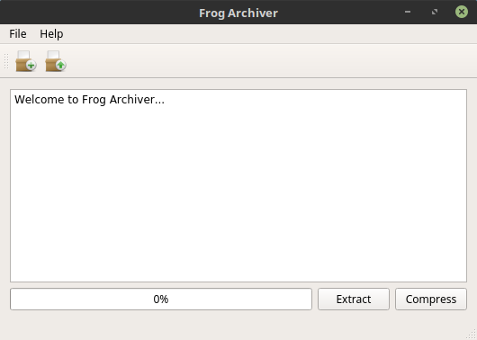
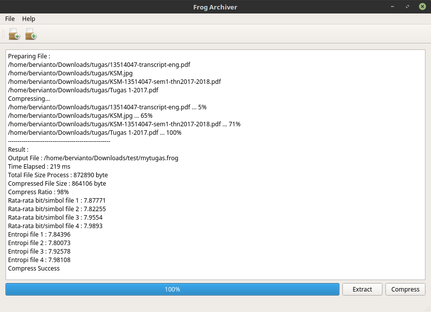
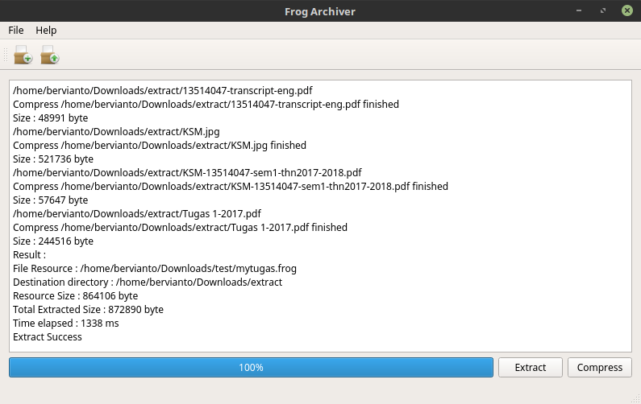
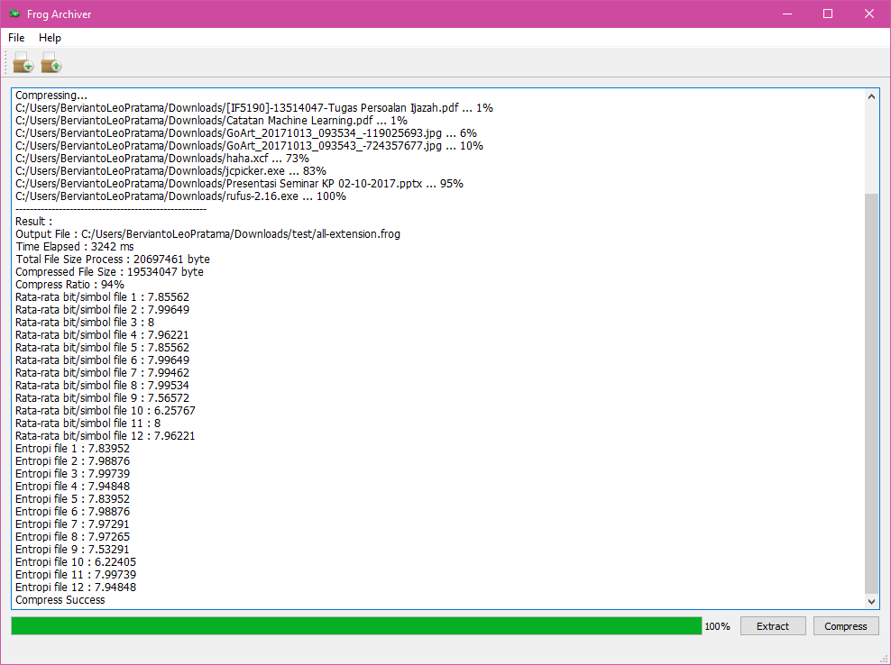

|
Frog Archiver 1.0
Frog Archiver is compression tools for any files you have.
|
|
Frog Archiver 1.0
Frog Archiver is compression tools for any files you have.
|

Frog Archiver is compression tools for any files you have.
| Github Action |
|---|
First (Alpha Version): https://youtu.be/THsPWMalRmM
Windows Version: https://youtu.be/p-vew6fqxTY
Linux Version: https://youtu.be/NKV_E7RWcxo









Download in Release Page.
Alternative
Some source code modified from this source code : Link